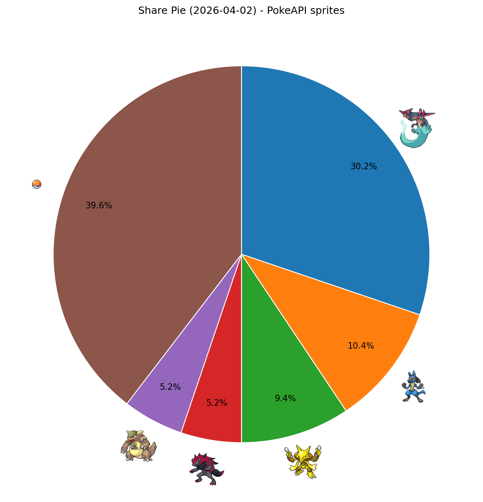
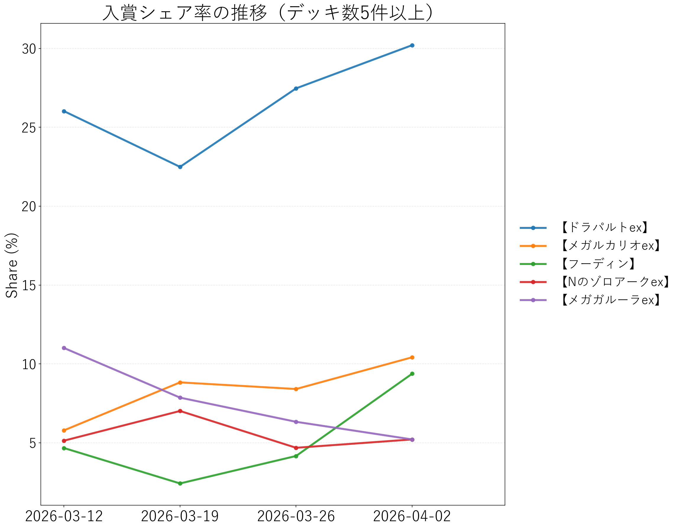

↔ 横スクロール
| 順位 | デッキタイプ | 入賞数 | シェア |
|---|---|---|---|
| 1 | 【ドラパルトex】 | 29 | 30.21% |
| 2 | 【メガルカリオex】 | 10 | 10.42% |
| 3 | 【フーディン】 | 9 | 9.38% |
| 4 | 【Nのゾロアークex】 | 5 | 5.21% |
| 5 | 【メガガルーラex】 | 5 | 5.21% |
| 6 | その他 | 38 | 39.58% |

PokeAPIアイコン付きシェア円グラフ

入賞シェア率の推移
分析対象週: 2026-03-27 〜 2026-04-02
最終更新日時: 2026-04-03 15:22:33
比較期間: 2026-03-20 〜 2026-03-26
| 順位 | デッキタイプ | 入賞数 | シェア |
|---|---|---|---|
| 1 | 【ドラパルトex】 | 29 | 30.21% |
| 2 | 【メガルカリオex】 | 10 | 10.42% |
| 3 | 【フーディン】 | 9 | 9.38% |
| 4 | 【Nのゾロアークex】 | 5 | 5.21% |
| 5 | 【メガガルーラex】 | 5 | 5.21% |
| 6 | その他 | 38 | 39.58% |


| デッキタイプ | 前週 | 今週 | 差分 |
|---|---|---|---|
| 【フーディン】 | 4.16% | 9.38% | +5.22pt |
| 【ドラパルトex】 | 27.47% | 30.21% | +2.74pt |
| 【メガルカリオex】 | 8.41% | 10.42% | +2.01pt |
| 【Nのゾロアークex】 | 4.68% | 5.21% | +0.53pt |
| デッキタイプ | 前週 | 今週 | 差分 |
|---|---|---|---|
| 【メガガルーラex】 | 6.33% | 5.21% | -1.12pt |
マッチアップ勝率算出方式 i
| deck_type | 【ドラパルトex】 | 【メガルカリオex】 | 【フーディン】 | 【Nのゾロアークex】 | 【メガガルーラex】 |
|---|---|---|---|---|---|
| 【ドラパルトex】 | - | 46.8% 43.7-49.9% 信頼度=高 | 51.8% 48.8-54.8% 信頼度=高 | 46.0% 42.0-50.1% 信頼度=高 | 62.8% 58.6-66.7% 信頼度=高 |
| 【メガルカリオex】 | 53.2% 50.1-56.3% 信頼度=高 | - | 58.8% 54.7-63.0% 信頼度=高 | 48.2% 43.6-52.4% 信頼度=高 | 64.1% 54.9-73.3% 信頼度=中 |
| 【フーディン】 | 48.2% 45.2-51.2% 信頼度=高 | 41.2% 37.2-45.2% 信頼度=高 | - | 50.1% 45.0-55.0% 信頼度=高 | 63.6% 53.6-73.5% 信頼度=中 |
| 【Nのゾロアークex】 | 54.0% 49.9-58.2% 信頼度=高 | 51.8% 47.1-55.8% 信頼度=高 | 49.9% 44.9-55.2% 信頼度=高 | - | 63.6% 41.2-83.7% 信頼度=低 |
| 【メガガルーラex】 | 37.2% 33.2-41.5% 信頼度=高 | 35.9% 27.0-45.0% 信頼度=中 | 36.4% 26.3-47.2% 信頼度=中 | 36.4% 15.9-58.5% 信頼度=低 | - |
| 順位 | メタカード | 最新採用率 | 前週採用率 | 差分 | 主な採用デッキタイプ |
|---|---|---|---|---|---|
| 1 | マシマシラ(アドレナブレイン) | 47.9% | 41.4% | +6.5pt | 【ドラパルトex】 / 【Nのゾロアークex】 / 【メガガルーラex】 |
| 2 | シェイミ(はなのカーテン) | 41.7% | 20.8% | +20.8pt | 【ドラパルトex】 / 【フーディン】 / 【おまつりおんど】 |
| 3 | スボミー(むずむずかふん) | 39.6% | 42.9% | -3.3pt | 【ドラパルトex】 / 【ゲッコウガex】 / 【メガスターミーex】 |
| 4 | ロケット団の監視塔 | 37.5% | 27.9% | +9.6pt | 【ドラパルトex】 / 【メガサメハダーex】 / 【Nのゾロアークex】 |
| 5 | コダック(しめりけ) | 24.0% | 25.9% | -1.9pt | 【フーディン】 / 【おまつりおんど】 / 【イワパレス】 |
| 6 | リーリエのピッピex(フェアリーゾーン) | 22.9% | 31.6% | -8.6pt | 【ドラパルトex】 / 【メガガルーラex】 / 【ロケット団のミュウツーex】 |
| 7 | ジャミングタワー | 22.9% | 11.1% | +11.8pt | 【ドラパルトex】 / 【ブリジュラスex】 |
| 8 | バトルコロシアム | 14.6% | 10.1% | +4.5pt | 【フーディン】 / 【イイネイヌ】 / 【ダイゴのメタグロスex】 |
| 9 | モモワロウex(しはいのくさり) | 8.3% | 6.2% | +2.1pt | 【Nのゾロアークex】 / 【メガサメハダーex】 |
| 10 | ミストエネルギー | 6.2% | 7.0% | -0.7pt | 【イワパレス】 / 【ソウブレイズex】 / 【メガガルーラex】 |
算出方法 i
| 順位 | デッキタイプ | 安定スコア | デッキ数 | early_setup比率 |
|---|---|---|---|---|
| 1 | 【ドラパルトex】 | 0.2850 | 29 | 0.458 |
| 2 | 【Nのゾロアークex】 | 0.2149 | 5 | 0.433 |
| 3 | 【メガルカリオex】 | 0.2127 | 10 | 0.517 |
| 4 | 【メガガルーラex】 | 0.1519 | 5 | 0.367 |
| 5 | 【フーディン】 | 0.1443 | 9 | 0.398 |
安定スコアでは説明しきれない上振れ/下振れを確認します（残差=実績high_finish_rate-期待値）。
| 順位 | デッキタイプ | 残差 | z値 | 実績high_finish | 期待high_finish | 評価コメント |
|---|---|---|---|---|---|---|
| 1 | 【メガルカリオex】 | +0.1143 | +1.87 | 30.00% | 18.57% | 安定指標より上振れ傾向（過小評価候補） |
| 2 | 【Nのゾロアークex】 | +0.0120 | +0.20 | 20.00% | 18.80% | 安定指標と概ね整合 |
| 3 | 【フーディン】 | -0.0040 | -0.06 | 11.11% | 11.51% | 安定指標と概ね整合 |
| 4 | 【ドラパルトex】 | -0.0190 | -0.31 | 24.14% | 26.04% | 安定指標と概ね整合 |
| 5 | 【メガガルーラex】 | -0.1229 | -2.01 | 0.00% | 12.29% | 安定指標より下振れ傾向（過大評価注意） |
予測方式 i
| 順位 | デッキタイプ | 今週シェア | 来週予想シェア（指数移動平均） | 差分 |
|---|---|---|---|---|
| 1 | 【ドラパルトex】 | 30.21% | 49.35% | +19.15pt |
| 2 | 【メガルカリオex】 | 10.42% | 18.66% | +8.25pt |
| 3 | 【フーディン】 | 9.38% | 18.32% | +8.95pt |
| 4 | 【Nのゾロアークex】 | 5.21% | 8.28% | +3.07pt |
| 5 | 【メガガルーラex】 | 5.21% | 5.38% | +0.17pt |
| デッキタイプ | 今週シェア | 来週予想シェア（prev_delta） | 差分 | シグナル |
|---|---|---|---|---|
| 【ドラパルトex】 | 30.21% | 47.21% | +17.00pt | Rising Alert |
| 【フーディン】 | 9.38% | 20.91% | +11.53pt | Rising Alert |
| 【メガルカリオex】 | 10.42% | 17.81% | +7.39pt | Rising Alert |
| 【Nのゾロアークex】 | 5.21% | 8.22% | +3.01pt | Rising Alert |
| 【メガガルーラex】 | 5.21% | 5.86% | +0.65pt | Rising Alert |
算出方法 i
推奨コメントは固定ルールで自動生成（matchup / stability / surprise の正規化スコアと、meta_share の相対位置を使用）
| 順位 | デッキタイプ | 推奨コメント | final_score | meta_share | high_finish_rate |
|---|---|---|---|---|---|
| 1 | 【ドラパルトex】 | 安定性が高く、連戦で再現しやすい / 上位対面への期待勝率が高い | 0.9611 | 30.21% | 24.14% |
| 2 | 【Nのゾロアークex】 | 上位対面への期待勝率が高い / 対策の薄い立ち位置を取りやすい | 0.5647 | 5.21% | 20.00% |
| 3 | 【メガルカリオex】 | 上位対面への期待勝率が高い / 対策の薄い立ち位置を取りやすい | 0.5616 | 10.42% | 30.00% |
| 4 | 【フーディン】 | 使用率が高い環境でも勝ち筋を維持しやすい | 0.0781 | 9.38% | 11.11% |
| 5 | 【メガガルーラex】 | 主要指標がバランス型で大きな弱点が少ない | 0.0459 | 5.21% | 0.00% |